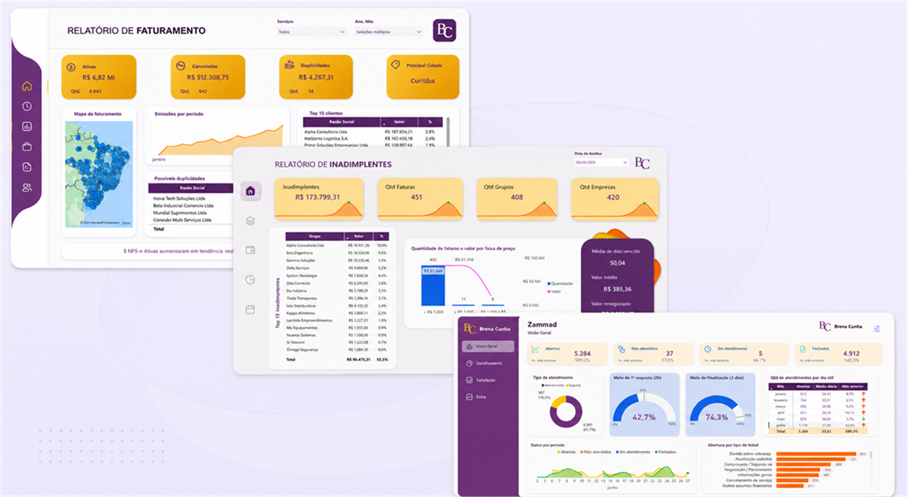
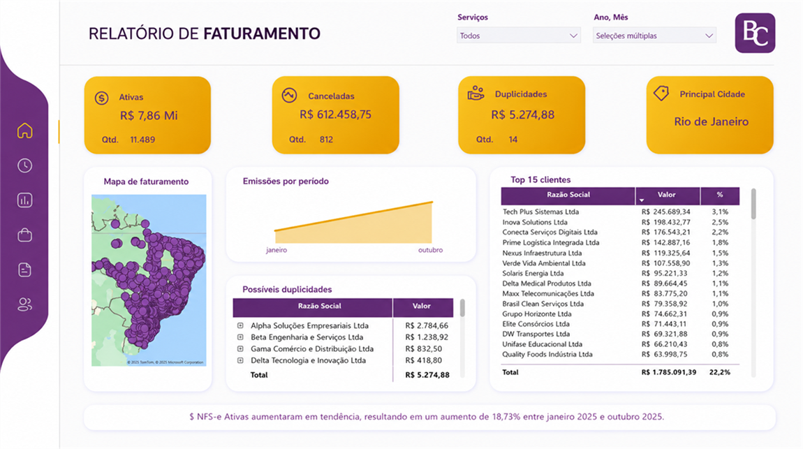

Desafio
A performance financeira precisava de indicadores consistentes, histórico organizado e rotinas de gestão para apoiar decisões.
Estruturação de indicadores financeiros, histórico operacional e acompanhamento contínuo da performance.
VOLTAR PARA PROJETOS
A performance financeira precisava de indicadores consistentes, histórico organizado e rotinas de gestão para apoiar decisões.
Estruturar KPIs, relatórios e acompanhamento contínuo para ampliar visibilidade, previsibilidade e tomada de decisão.
Gestão por indicadores cria clareza sobre desempenho, prioridades e próximos movimentos.
Definição dos indicadores financeiros prioritários para acompanhamento.
Consolidação das bases históricas para análise comparativa.
Aprimoramento da leitura de caixa, forecast e previsibilidade.
Revisão de critérios e acompanhamento financeiro das comissões.
Criação de acompanhamento recorrente para leitura e decisão.
Conexão dos indicadores com performance e prioridades de gestão.
Estruturação dos indicadores de gestão financeira.
Organização das bases e séries operacionais.
Melhoria do fluxo de caixa e da visão forecast.
Reestruturação de critérios e acompanhamento.
Implantação de acompanhamento gerencial recorrente.
Gestão contínua por indicadores e resultados.



A estrutura de indicadores deu mais previsibilidade e disciplina para acompanhar a performance financeira.

Experiência em gestão financeira, indicadores estratégicos, melhoria contínua, automação e estruturação de processos, com atuação voltada para eficiência operacional e geração de resultados.
VAMOS CONVERSAR?Gestão financeira, indicadores e suporte à tomada de decisão.
Padronização, melhoria contínua e eficiência operacional.
Desenvolvimento de pessoas, organização e resultados.